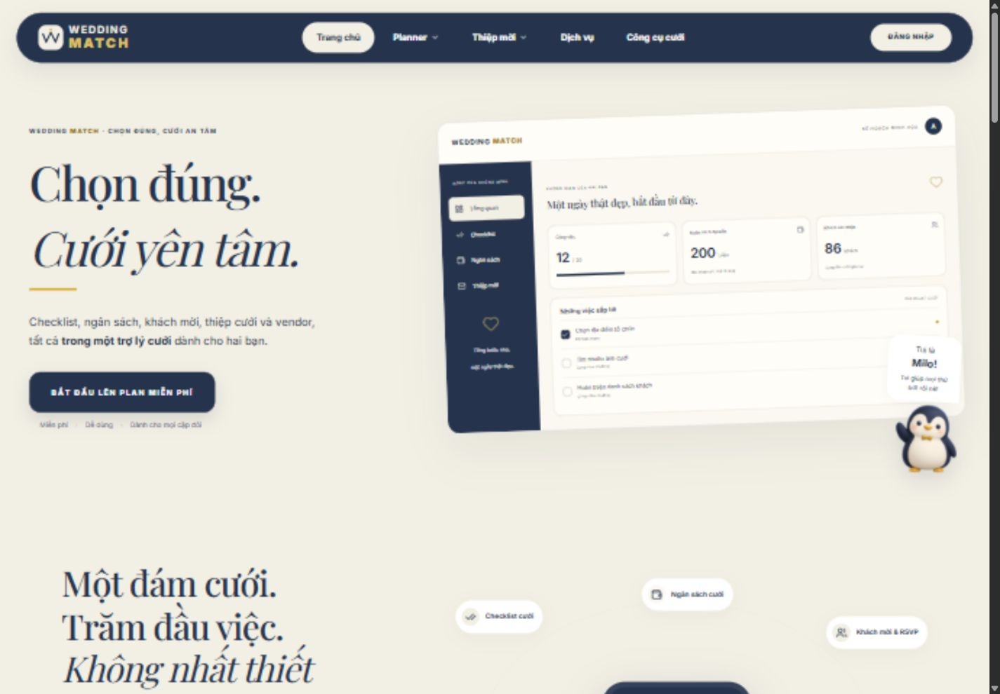
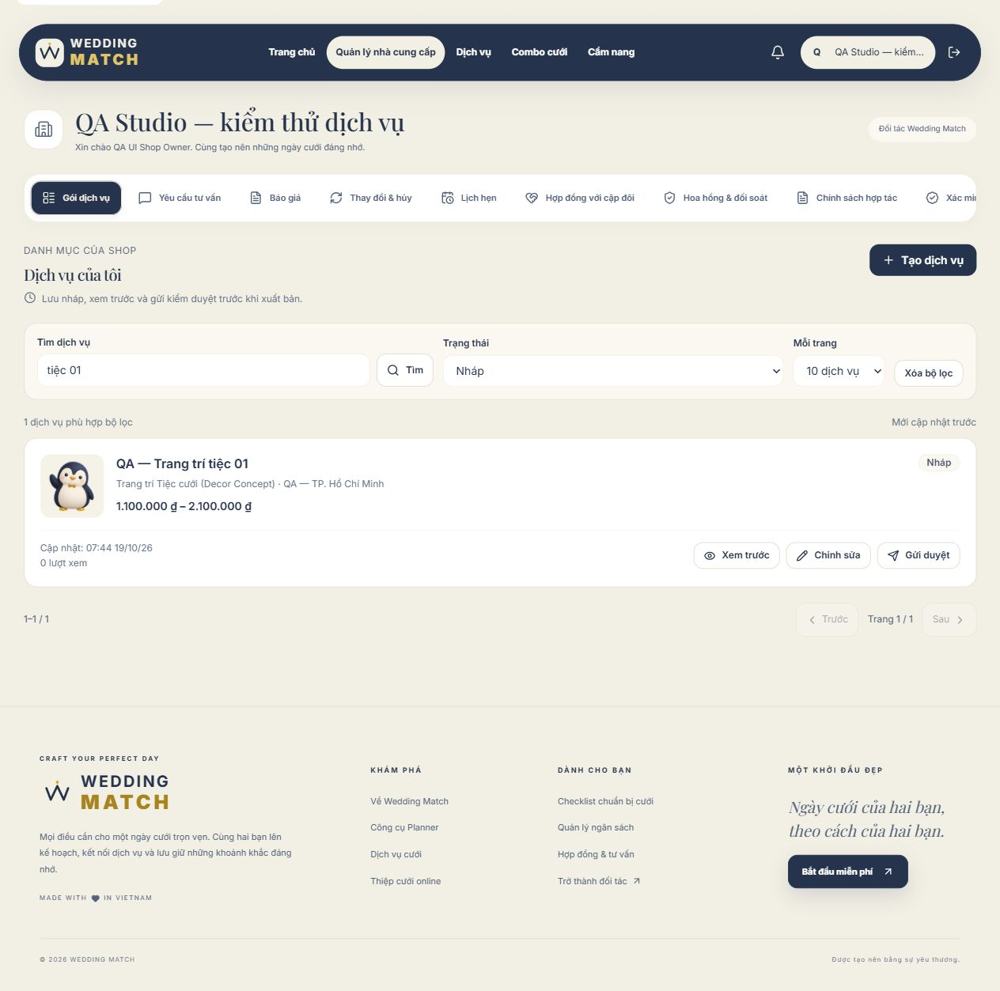
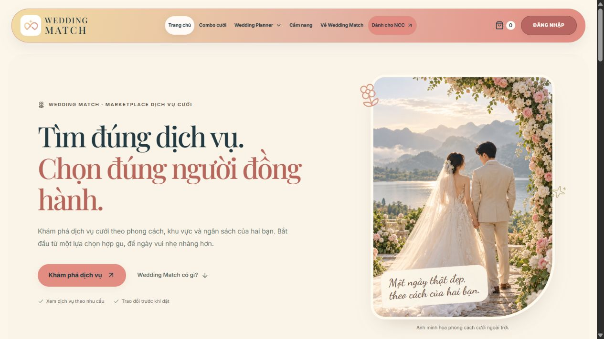
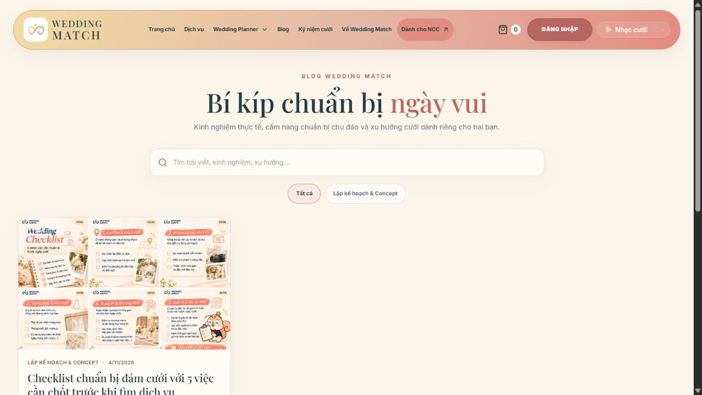

Wedding Match / EXE201 Outcome 3
OUR PRODUCT DEVELOPMENT JOURNEY
14 Documented Milestones | Oct 16 – Nov 5, 2026

Recorded local / historical01 / Foundation
Early customer entry point
Oct 16–18
Initial navy UI, responsive design, customer onboarding and the planning journey.

Historical browser QA02 / Core workflows
Workflows by role
Oct 19–22
Vendor management, combos, moderation, notifications and role-based navigation.

Hosted live03 / Deploy & redesign
Public identity takes shape
Oct 23–30
Public website launch, ivory/coral identity and a documented Vendor Studio workspace.

Hosted live04 / Public UX refinement
Marketplace & Blog refinement
Nov 1–5
Mobile improvements, homepage redesign, marketplace browsing and server-backed Blog.